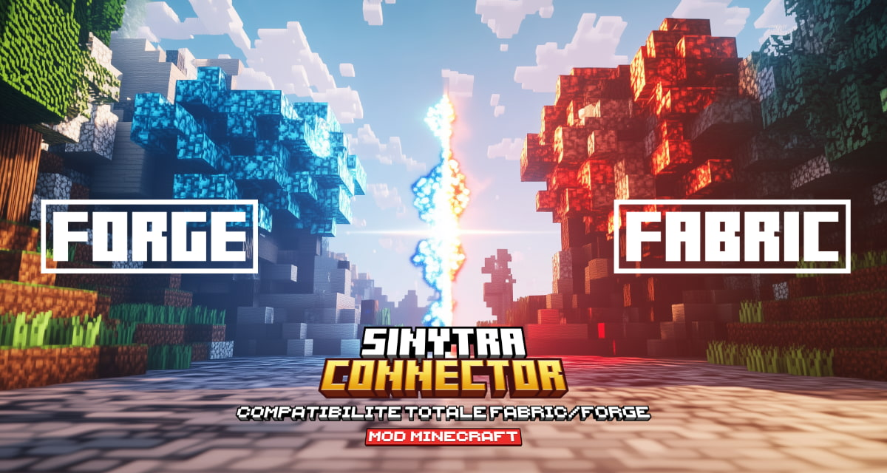

Sinytra Connector : Compatibilité Totale Fabric/Forge – Mod Minecraft – 1.20 → 1.21
Le mod Sinytra Connector se positionne comme une solution essentielle pour les utilisateurs qui souhaitent faire fonctionner des mods Fabrics sur la plateforme Minecraft Forge.Il permet de fusionner ces deux environnements souvent incompatibles, réduisant ainsi les efforts nécessaires pour maintenir des mods sur plusieurs plateformes pour ceux qui ne savent pas quoi choisir entre forge et fabrics.
Caractéristiques du mod Sinytra Connector
- Compatibilité entre mods Fabric et Forge : Le mod agit comme une couche intermédiaire qui permet d’exécuter des mods Fabric sur une instance Minecraft fonctionnant avec Forge.
- Réduction de la maintenance des mods : Pour les développeurs, cela signifie moins de travail pour maintenir plusieurs versions de leurs mods, car ils peuvent désormais être compatibles avec les deux plateformes.
- Prise en charge de mods multiples : Vous pouvez utiliser un modpack combinant des mods Forge et Fabric, ce qui élargit les possibilités de personnalisation de vos mondes Minecraft.
Il est important de noter que Sinytra Connector est actuellement en version bêta, ce qui signifie que certaines fonctionnalités peuvent encore poser des problèmes ou que certains mods peuvent ne pas fonctionner comme prévu.
Télécharger Sinytra Connector
Pour utiliser Sinytra Connector découvrez comment installer un mod sur minecraft.VOus aurez également besoin de la Forgified Fabric API
Télécharger Sinytra Collector/Sinytra Connector sur CurseForge